An explainable phishing detector I built solo for my MS capstone, then rebuilt so every number is reproducible. It scores any URL on demand and corroborates evidence across five layers before it flags a site: on 136 real brand sites it never trained on, the full system flagged 4, where the URL model alone would have flagged 40%.
F1 of the URL model on 147,702 test URLs from websites it never saw
4 / 136
real brand sites flagged as phishing by the full system
385
automated tests, run in CI on every push
Live demoRuns in your browser
Try the detector yourself
Paste any URL and the URL model and the rules that can run without visiting the page will score it here, in your browser. Below that are replays of the full system, page capture included, on real brand sites and real phishing pages, including the ones it gets wrong.
Phishing detector · paste any URL
Try:
The URL never leaves your browser. Nothing is fetched from it, and it is not sent to any server. This is the URL model only, without live page capture.
Checked against the Python app on 148,746 URLs (147,714 from the held-out test file plus the curated evaluation sets): identical features for 148,746 of 148,746, the same calibrated score (to the 6 decimals the app reports) for 148,746, and the same 4-model vote for 148,746. On 21,032 of them the real dashboard was also run, and the ML-only verdict matched for 21,032 of 21,032. Largest probability difference: 1.2e-07 (tolerance 1e-6). Parity test and export code.
Replays of the full system
Each page was captured once by GitHub Actions on 2026-09-30 and saved, then replayed through all five layers with the final rules. These cases are from the test half, which was not used to tune the rules. Phishing addresses are shown as plain text and are never links.
1 of 8
CorrectLikely legitimate
Brand site, called legitimate
https://www.wellsfargo.com/about
Page title: About Wells Fargo · Ended on: www.wellsfargo.com · URL model alone: 0.646
scripts from many unrelated third-party domains3+ of 4 models vote legitimatevisit stayed on the same domainpage brand matches the domain
The URL model alone scores this address 0.646, on the phishing side. With the page loaded, the brand on the page matches the domain, the visit stayed on wellsfargo.com, there is no password form, no form posts off-site, and the domain is in the official-domain prior. The only phishing signal is scripts from many unrelated third-party domains, which is weak next to that legitimacy evidence.Truth: legitimate (official brand URL). Explanation written by me from the recorded signals.
All recorded signals (score 0.08 phishing vs 1.29 legitimacy)
Hard blockers: none
Phishing signals: scripts from many unrelated third-party domains
Legitimacy signals: 3+ of 4 models vote legitimate, visit stayed on the same domain, page brand matches the domain, valid HTTPS, domain in the official-domain prior, no password form, no form posts off-site, full site navigation and help links
Ambiguity signals: URL score 0.50 to 0.70, official content wrapper, brand-coherent wrapper, requests to unrelated third-party domains
CorrectLikely legitimate
Real sign-in page, called legitimate
https://appleid.apple.com
Page title: Apple Account: Sign-in and Manage · Ended on: account.apple.com (another host) · URL model alone: 0.888
URL score 0.85 or highervisit stayed on the same domainfirst-party sign-in flowpage brand matches the domain
A genuine sign-in page is the hardest kind of legitimate page, because a phishing kit copies exactly this. The URL model scores it 0.888. The page evidence wins: the visit stayed inside apple.com, the brand matches the domain, the domain is in the official-domain prior, and no form posts off-site.Truth: legitimate (official brand URL). Explanation written by me from the recorded signals.
All recorded signals (score 0.35 phishing vs 1.4 legitimacy)
Hard blockers: none
Phishing signals: URL score 0.85 or higher
Legitimacy signals: visit stayed on the same domain, first-party sign-in flow, page brand matches the domain, valid HTTPS, domain in the official-domain prior, no password form, no form posts off-site, low HTML risk
Ambiguity signals: only the boosted models vote phishing, models disagree by more than 0.4, URL model disagrees with a first-party login
False alarmLikely phishing
Brand site, wrongly called phishing
https://www.wellsfargo.com
Page title: Wells Fargo Bank | Financial Services & Online Banking · Ended on: www.wellsfargo.com · URL model alone: 0.888
URL score 0.85 or higher3+ of 4 models vote phishingscripts from many unrelated third-party domainsvisit stayed on the same domainvalid HTTPSno form posts off-site
One of the 4 official brand pages (of 136) that the full system flags. The brand check reports a strong brand-to-domain mismatch on this homepage, and the page loads scripts from many unrelated third-party domains. Together with a high URL score, that crosses the phishing threshold. Tuning removed the wrapper hard blocker it had before, but the score alone still gets there. The /about page on the same site (first card) is cleared, so this is a weakness in the rules, not in the domain.Truth: legitimate (official brand URL). Explanation written by me from the recorded signals.
All recorded signals (score 0.85 phishing vs 0.6 legitimacy)
Hard blockers: none
Phishing signals: URL score 0.85 or higher, 3+ of 4 models vote phishing, scripts from many unrelated third-party domains, strong brand-to-domain mismatch
Legitimacy signals: visit stayed on the same domain, valid HTTPS, no form posts off-site, full site navigation and help links
Ambiguity signals: requests to unrelated third-party domains, URL and page evidence disagree
Fixed by tuningLikely legitimate
Sign-in page fixed by the rule tuning
https://www.dropbox.com/home
Page title: Login or Sign Up for a Dropbox Account · Ended on: www.dropbox.com · URL model alone: 0.338 · Before tuning: Likely phishing
scripts from many unrelated third-party domains3+ of 4 models vote legitimatevisit stayed on the same domainfirst-party sign-in flow
/home sends you to Dropbox's login page. Before tuning, its password form, which is submitted by JavaScript and so has no form action, tripped the credential-harvesting hard blocker, and the page was called phishing. The tuning, done on the validation half only, made the judge treat that as context on a coherent first-party page: same domain, the page names the site, valid HTTPS, nothing posted off-site.Truth: legitimate (official brand URL). Explanation written by me from the recorded signals.
All recorded signals (score 0.08 phishing vs 1.29 legitimacy)
Hard blockers: none
Phishing signals: scripts from many unrelated third-party domains
Legitimacy signals: 3+ of 4 models vote legitimate, visit stayed on the same domain, first-party sign-in flow, valid HTTPS, domain in the official-domain prior, no form posts off-site, content-rich page, low HTML risk
Ambiguity signals: models disagree by more than 0.4, login submitted by the site's own script, requests to unrelated third-party domains
Page title: Google Docs · Ended on: listentoyourangels.com · URL model alone: 0.646
credential-harvesting formstrong brand-to-domain mismatchlogin page on a non-official domainvisit stayed on the same domainvalid HTTPSno form posts off-site
The URL model gives 0.646, which is not enough on its own. The page gives it away: it presents itself as Google Docs on an unrelated domain and shows a login form, which fires the credential-harvesting hard blocker and a strong brand-to-domain mismatch.Truth: phishing (reported to the PhishStats feed). Explanation written by me from the recorded signals.
All recorded signals (score 0.5 phishing vs 0.45 legitimacy)
Hard blockers: credential-harvesting form
Phishing signals: strong brand-to-domain mismatch, login page on a non-official domain
Legitimacy signals: visit stayed on the same domain, valid HTTPS, no form posts off-site
Ambiguity signals: URL score 0.50 to 0.70, only the boosted models vote phishing, requests to unrelated third-party domains, URL and page evidence disagree
Page title: Sign in - Google Accounts · Ended on: 49.51.43.12 · URL model alone: 0.999
credential-harvesting formURL score 0.85 or higher3+ of 4 models vote phishingobfuscated script around a loginno form posts off-site
A Google sign-in clone served from a bare IP address over plain HTTP. The URL model is near certain and the host itself is a suspicious pattern. The page adds a credential-harvesting form, obfuscated script around the login, and a sign-in surface without HTTPS.Truth: phishing (reported to the PhishStats feed). Explanation written by me from the recorded signals.
All recorded signals (score 1.6 phishing vs 0.2 legitimacy)
Hard blockers: credential-harvesting form
Phishing signals: URL score 0.85 or higher, 3+ of 4 models vote phishing, obfuscated script around a login, sign-in without valid HTTPS, suspicious host pattern, strong brand-to-domain mismatch, login page on a non-official domain
Legitimacy signals: no form posts off-site
Ambiguity signals: same domain, but a suspicious one, encoded or tracking-style URL
MissedLikely legitimate
Missed: clean-looking page on a free host
https://mysitee-seven.vercel.app/
Page title: Nu Cashback | Você tem dinheiro te esperando · Ended on: mysitee-seven.vercel.app · URL model alone: 0.985
URL score 0.85 or higher3+ of 4 models vote phishingvisit stayed on the same domainvalid HTTPSno password form
This is the known weakness. The URL model scores it 0.985, but the captured page had no password form, no off-site form and plenty of content, so the legitimacy signals outweighed the URL score. The rules cannot turn 'high URL score plus a clean page' into a phishing verdict without also flagging popular legitimate homepages that the URL model also scores high.Truth: phishing (reported to the PhishStats feed). Explanation written by me from the recorded signals.
All recorded signals (score 0.47 phishing vs 1.1 legitimacy)
Hard blockers: none
Phishing signals: URL score 0.85 or higher, 3+ of 4 models vote phishing
Legitimacy signals: visit stayed on the same domain, valid HTTPS, no password form, no form posts off-site, content-rich page, low HTML risk
Ambiguity signals: requests to unrelated third-party domains, URL and page evidence disagree
Page title: Just a moment... · Ended on: pyvlgy.com · URL model alone: 0.176
3+ of 4 models vote legitimatevisit stayed on the same domainpage brand matches the domain
The capture got a page titled 'Just a moment...', a bot-check interstitial, not the phishing page. Kits like this most likely show harmless content to data-center browsers, so the page looked clean. The URL, a random domain with a query string, did not look suspicious to the model either (0.176).Truth: phishing (reported to the PhishStats feed). Explanation written by me from the recorded signals.
All recorded signals (score 0.0 phishing vs 1.5 legitimacy)
Hard blockers: none
Phishing signals: none
Legitimacy signals: 3+ of 4 models vote legitimate, visit stayed on the same domain, page brand matches the domain, host identity fits the brand, valid HTTPS, no password form, no form posts off-site, content-rich page, low HTML risk
Ambiguity signals: models disagree by more than 0.4
The honest numbers
4 / 136
real brand sites the full system calls phishing (7 before the rule tuning). The URL model alone flags 40.4% of them.
test half, frozen snapshot replay
39 / 99
fresh phishing pages caught by the full system; 40 were called legitimate. Recall on fresh phishing is the known weakness.
PhishStats feed, captured pages, test half
69 / 284
PhishStats URLs that ML-only mode (the box above) calls likely phishing; the other 215 stay uncertain, because without the page it never says legitimate.
ML-only dashboard, no page capture
What this means: the system is good at not crying wolf on real sites, and it is not yet good at catching brand-new phishing. Across all 212 legitimate pages in the test replay, 19 were labeled phishing. Every number here is generated from VERIFIED_METRICS.md and the replay results in metrics/results/tuning, not typed by hand.
Case study
How the system is built, what was measured, and the decisions behind it.
Overview01
URL-based machine learning is fast, but on modern, JavaScript-heavy sites it tends to over-alert, flagging legitimate pages as threats. This project pairs an ML triage step with a deterministic evidence review, so every verdict is corroborated across multiple independent signals and comes with a reason a security analyst can read.
It runs as a Streamlit dashboard in Docker and returns one of three verdicts: likely-phishing, uncertain (routed to review), or likely-legitimate, rather than an opaque score.
How it works02
A URL flows through five coordinated layers before a verdict is issued:
Figure 1System diagram
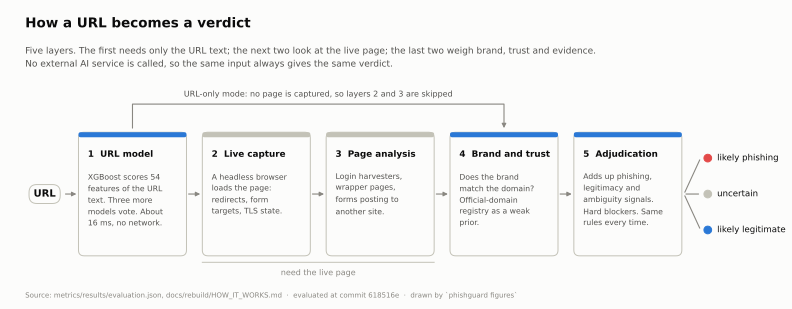
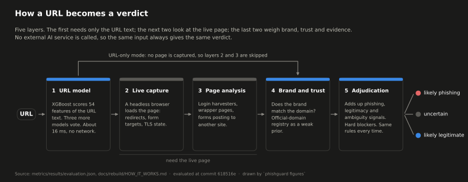
How a URL becomes a verdict
What it showsOne URL moving left to right through the five layers and ending in one of three verdicts. The arrow over the top is URL-only mode, where no page is loaded and layers 2 and 3 are skipped.
Why it mattersThis is the map for every chart below. It also explains why the browser demo above mostly answers uncertain: it only has layer 1 and the rules that need no page.
ML + model agreement. Four models (LightGBM, XGBoost, Random Forest, Logistic Regression) are trained on 54 URL and host features from 794,563 deduplicated URLs. Train and test are split by registered domain, so no website appears in both, and the features ignore http vs https (a quirk of the dataset the model would otherwise learn). XGBoost was picked on a validation split, never the test set; the other three vote as supporting evidence.
Live capture with Playwright. The page is actually loaded to collect final URLs, redirect chains, cross-domain form targets, and TLS / certificate state.
HTML / DOM and behavior. Structural tells are analyzed: wrapper pages, interstitials, credential-harvest layouts, and network patterns that hint at exfiltration.
Brand and trust context. Rule-based brand-impersonation checks test brand-to-domain coherence against a registry used as a weak prior, never a whitelist.
Evidence Adjudication Layer. A deterministic engine weighs all of the above into likely-phishing, uncertain, or likely-legitimate, returning uncertain rather than guessing when signals conflict.
Results03
Every number below is regenerated by one script (seed 42) and saved with the commit, data hash and environment that produced it, in VERIFIED_METRICS.md.
What was measured
Result
URL model (XGBoost), 147,702 test URLs from unseen websites
F1 0.801 (95% CI 0.799 to 0.803), ROC-AUC 0.880, precision 0.772, recall 0.832
136 real brand sites (PayPal, Microsoft, Chase, Amazon and others), URL model alone
40.4% flagged
Same 136 sites, full system with live page capture
4 phishing, 24 uncertain, 108 legitimate
99 fresh phishing URLs from the PhishStats feed, full system
39 phishing, 20 uncertain, 40 legitimate
Time per URL
15.7 ms URL model only; 6.8 s median with live page capture
URL model vs a local LLM (llama3.2:3b via Ollama), 2,000 held-out test URLs, same 2-core CPU
F1 0.802 vs 0.635 (difference +0.167, 95% CI +0.134 to +0.202); 11.4 ms vs 741.6 ms median, 65x faster per URL
Cascade on the same 2,000 URLs, example band: the LLM only sees URLs the model scores 0.30 to 0.70
81.6% of URLs never reach the LLM; false alarms 24.6% to 16.1%, recall 0.860 to 0.770, F1 0.802 to 0.787; 5.4x faster than the LLM on every URL
The live-capture rows replay one saved snapshot of real pages, captured by GitHub Actions. I wrote the tuning rules down before changing anything, tuned only on a validation half, and scored the test half once.
Compared with an existing tool. I ran a free open-source LLM on the same URLs as a baseline. It raised far fewer false alarms (6.6% vs 24.6%) but caught only half of the phishing (recall 0.501 vs 0.860). This is one small open model with one fixed prompt, so it says nothing about large hosted models. 8 of its 2,000 answers were neither label and were counted as legitimate. The cascade is an offline measurement, not how the app runs by default, and no band width was picked as the setting; every band is in VERIFIED_METRICS.md.
What it is good at, and what it is not. The layers do their job of not crying wolf on real sites. Catching brand-new phishing is the weak spot: the URL model rates many famous homepages as suspicious as phishing pages, so no rule can separate them without adding false alarms. Improving the URL model is the next step.
Figure 2Headline result
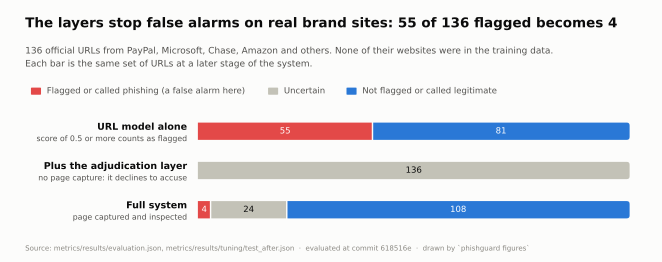
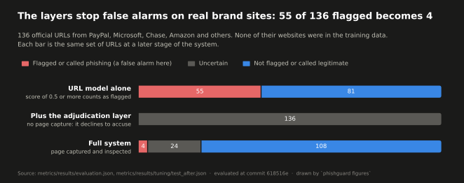
False alarms on real brand sites: 55 of 136 becomes 4
What it showsThe same 136 official brand URLs (PayPal, Microsoft, Chase, Amazon and others) at three stages. The URL model alone flags 55. Add the adjudication layer without a page and it declines to accuse any of them. With the page captured, the full system calls 4 phishing, 24 uncertain and 108 legitimate.
Why it mattersThis is the reason the project is a layered system and not just a classifier. A model score alone would bury an analyst in false alarms on the sites people use most.
Figure 3Error analysis
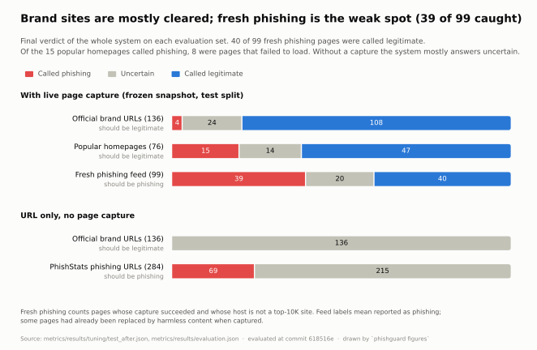
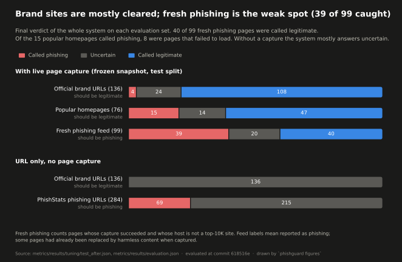
Final verdicts on every evaluation set
What it showsWhere the full system lands on each test set, with and without page capture. Brand sites are mostly cleared, 15 of 76 popular homepages are still called phishing, and only 39 of 99 fresh phishing pages are caught while 40 are called legitimate.
Why it mattersIt shows the weak spot as measured instead of hiding it. Recall on brand-new phishing is where the next round of work goes.
The URL model in detail
Six charts on the URL model. Swipe or use the arrows.
1 of 6
Figure 4Model performance
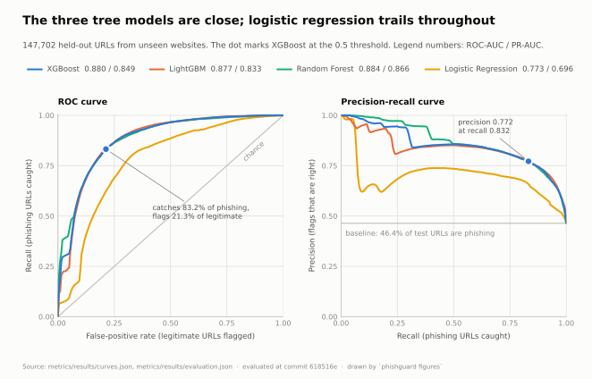
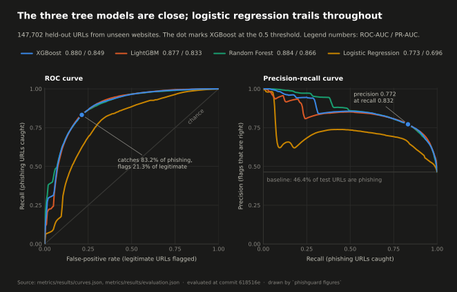
ROC and precision-recall curves, four models
What it showsEvery threshold trade-off for the four models on 147,702 URLs from websites never seen in training. The dot marks XGBoost at the 0.5 threshold: it catches 83.2% of phishing and flags 21.3% of legitimate URLs.
Why it mattersA single F1 number hides the trade-off; the curves show all of it. The three tree models sit almost on top of each other, so the choice of XGBoost is not a fragile one.
Figure 5Model comparison
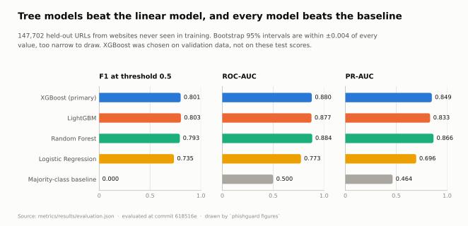
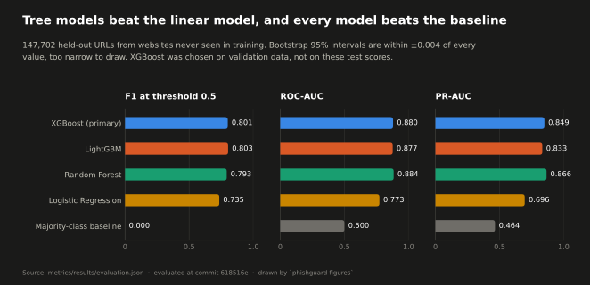
Four models against a baseline
What it showsF1, ROC-AUC and PR-AUC side by side for XGBoost, LightGBM, Random Forest, Logistic Regression and a majority-class baseline, all on the same held-out URLs.
Why it mattersIt proves the models learned something real (every one beats the baseline) and that tree models beat the linear one. XGBoost was picked on validation data, so these test scores were never used to choose it.
Figure 6Error counts
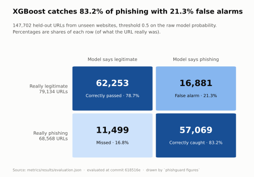
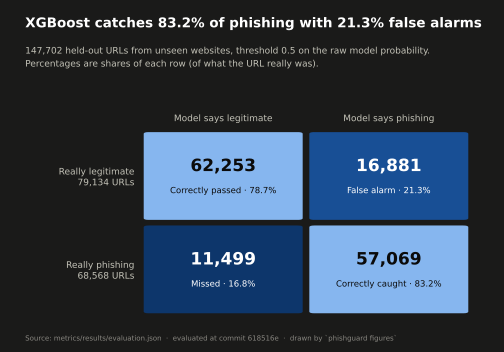
Confusion matrix of the primary model
What it showsThe XGBoost score turned into four counts at the 0.5 threshold: 62,253 legitimate URLs correctly passed, 16,881 false alarms, 11,499 phishing URLs missed and 57,069 correctly caught.
Why it mattersIt turns an abstract F1 of 0.80 into real mistakes you can count. That 21.3% false alarm rate is exactly what layers 2 to 5 exist to fix.
Figure 7Explainability
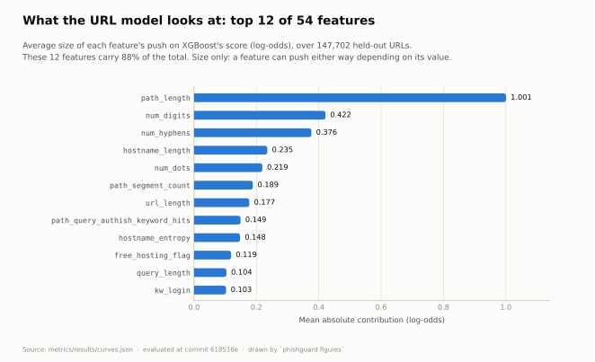
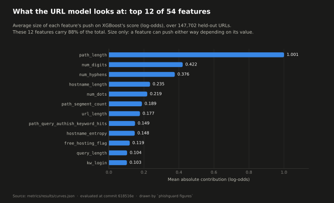
What the URL model looks at
What it showsThe 12 features (of 54) with the largest average push on the XGBoost score. Path length carries more than twice the weight of anything else, and these 12 make up 88% of the total.
Why it mattersIt opens the black box. The model leans on the shape of the URL, which explains why long but legitimate addresses get flagged and why page evidence is needed to overrule it.
Figure 8Calibration
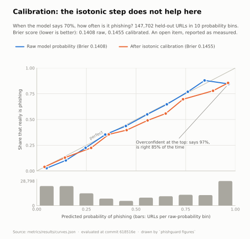
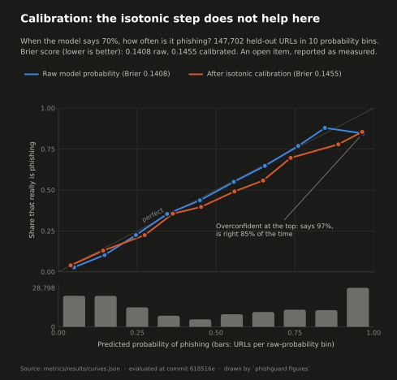
Can the probability be trusted?
What it showsPredicted probability against how often those URLs really were phishing, before and after isotonic calibration. At the top the model says 97% and is right 85% of the time, and calibration made the Brier score slightly worse (0.1408 to 0.1455).
Why it mattersThe adjudication rules use score thresholds, so knowing where the score is overconfident matters. It is reported as an open item, not smoothed over.
Figure 9Controlled experiment
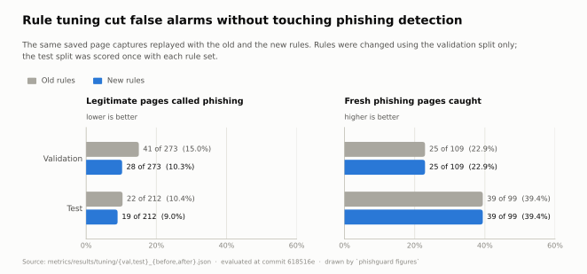
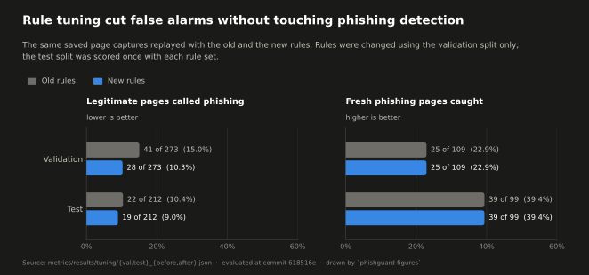
Rule tuning, before and after
What it showsThe same saved page captures replayed with the old and the new rules. Legitimate pages called phishing fall from 15.0% to 10.3% on validation and from 10.4% to 9.0% on test, while fresh phishing caught stays identical.
Why it mattersIt shows the tuning was done properly: rules changed on the validation half only, the test half scored once, and no recall was traded away to get the improvement.
Design decisions04
Deterministic at runtime. I prototyped LLM brand inference, then replaced it with deterministic rules for reproducibility. No external AI is called when scoring a URL, so verdicts are reproducible and auditable.
Conservative by default. When evidence disagrees the system says uncertain and routes the URL to review, instead of forcing a clean-looking answer.
Rebuilt to be verifiable. An audit of my first version found a leaky train/test split, so I rebuilt training and evaluation: domain-grouped splits, guards that stop a leaky run, and golden-output tests that pin the dashboard's behavior. 385 tests (pytest) run in GitHub Actions on every push, alongside a Docker build.
Figure 10Audit result
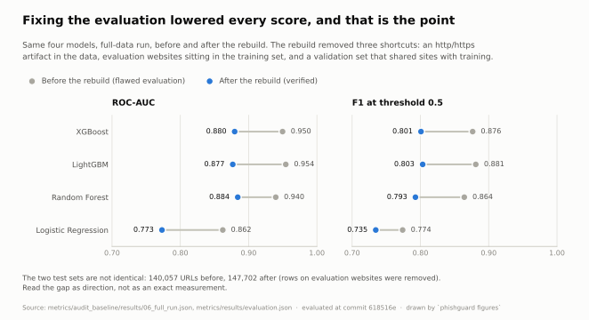
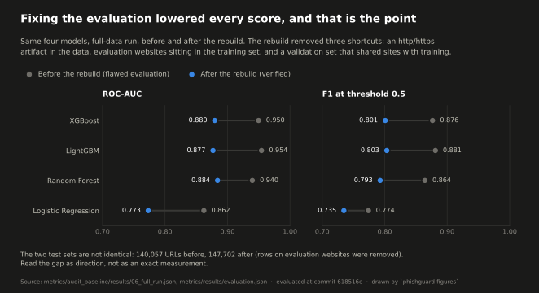
Before and after the rebuild
What it showsROC-AUC and F1 for all four models before and after I fixed the evaluation. Every score went down, for example XGBoost ROC-AUC from 0.950 to 0.880 and F1 from 0.876 to 0.801.
Why it mattersThe drop is the evidence that the leak was real. The earlier numbers were inflated by a data artifact and by test websites sitting in the training set; the lower numbers are the ones I can defend.